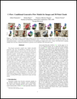

C-Flow: Conditional Generative Flow Models for Images and 3D Point Clouds
We introduce a novel conditioning scheme that brings normalizing flows to an entirely new scenario for multi-modal data modeling. We demonstrate our conditioning method to be very adaptable, being applicable to image manipulation, style transfer and multi-modal mapping in a diversity of domains, including RGB images, 3D point clouds, segmentation maps, and edge masks.
3D Reconstruction and Object Image Rendering
Results of modeling the conditional distributions: image→point cloud (3D reconstruction), and point cloud→image (render object image).
Image-to-Image
We also evaluate image-to-image: segmentation↔streetviews, structure↔facade, map↔aerial, and edges↔shoes.
Image Content Manipulation
We demonstrate the versatility of C-Flow being the first flow-based method capable of performing image content manipulation. Importantly, the model was not retrained for these specific tasks, and we use the same parameters learned to perform segmentation-to-street mapping.
Style Transfer
C-Flow is the first flow-based method capable of performing style transfer. Importantly, the model was not retrained for these specific tasks, and we use the same parameters learned to perform shoes-to-edge and edge-to-shoes mappings.
Method
C-Flow is based on a parallel sequence of invertible mappings in which a source flow guides the target flow at every step, enabling fine-grained control over the generation process. The model is trained by minimizing $\frac{1}{N}\sum_{i=1}^N \left[-\log p_{\mathbf{\theta},\mathbf{\phi}}(\mathbf{x}^{(i)}_\text{A}, \mathbf{x}^{(i)}_\text{B}) + \lambda \left \| \mathbf{x}^{(i)}_\text{B} - \hat{\mathbf{x}}^{(i)}_\text{B} \right \|_1 \right]$

BibTex
title={{C-Flow: Conditional Generative Flow Models for Images and 3D Point Clouds}},
author={Pumarola, Albert and Popov, Stefan and Moreno-Noguer, Francesc and Ferrai, Vittorio},
booktitle={arXiv preprint arXiv:1912.07009},
year={2019}
}
Publications
-

- C-Flow: Conditional Generative Flow Models for Images and 3D Point Clouds
- Conference in Computer Vision and Pattern Recognition (CVPR), 2020.